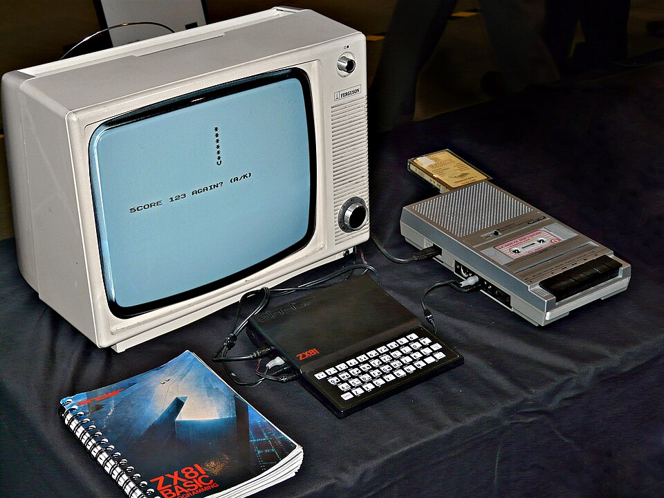
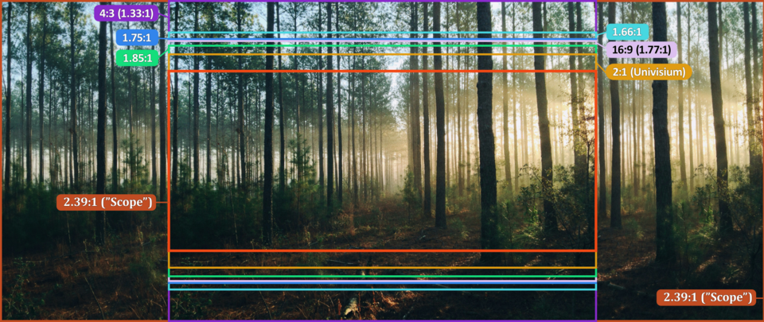

Ο υπολογιστής είναι από τις πιο δυνατές συσκευές για παρακολούθηση τηλεόρασης μέσω internet: μεγάλη οθόνη, ισχυρός επεξεργαστής και πλήρης έλεγχος της εγκατάστασης. Αν ψάχνεις έναν iptv player for pc, πιθανότατα θέλεις να δεις ελληνικά κανάλια, αθλητικά και ταινίες χωρίς να χρειάζεσαι box ή smart TV. Η καλή είδηση είναι ότι υπάρχουν αρκετοί δωρεάν και αξιόπιστοι players για Windows, που ρυθμίζονται σε λίγα λεπτά.
Το πρόβλημα είναι ότι οι επιλογές είναι πολλές και οι διαφορές δεν είναι πάντα φανερές. Ένας player μπορεί να είναι εξαιρετικός για απλή αναπαραγωγή, αλλά να μην υποστηρίζει οδηγό προγράμματος (EPG), εγγραφές ή λίστες Xtream Codes. Ένας άλλος μπορεί να προσφέρει τα πάντα, αλλά να είναι βαρύς και δύσκολος στη ρύθμιση.
Σε αυτόν τον οδηγό θα δεις τι είναι ένας IPTV player, ποιοι είναι οι 6 καλύτεροι για Windows, πώς τους εγκαθιστάς, πώς προσθέτεις μια λίστα M3U και πώς διορθώνεις το κόλλημα της εικόνας. Θα δεις επίσης πώς συνδυάζεις τον player με μια αξιόπιστη υπηρεσία όπως το greek iptv, ώστε να έχεις σταθερή ελληνική τηλεόραση στον υπολογιστή σου.

Περιεχόμενα
- Τι Είναι ένας IPTV Player for PC
- Οι 6 Καλύτεροι IPTV Players για Windows
- Πώς να Εγκαταστήσεις και να Ρυθμίσεις έναν Player
- Απαιτήσεις Συστήματος και Internet
- Πώς να Προσθέσεις Λίστα M3U ή Xtream Codes
- Συμβουλές για Σταθερή Ροή στον Υπολογιστή
- Ελληνικό Περιεχόμενο στο PC: Τι Θα Βρεις
- Συχνά Προβλήματα και Λύσεις
- Ασφάλεια και Νομιμότητα
- Συχνές Ερωτήσεις
- Συμπέρασμα
Τι Είναι ένας IPTV Player for PC
Ένας IPTV player for PC είναι ένα πρόγραμμα που διαβάζει μια λίστα καναλιών (συνήθως σε μορφή M3U ή μέσω Xtream Codes) και αναπαράγει τη ροή μέσω internet στον υπολογιστή σου. Ο player από μόνος του δεν περιέχει κανάλια. Είναι το «εργαλείο» που τα εμφανίζει, ενώ το περιεχόμενο έρχεται από την υπηρεσία IPTV στην οποία είσαι συνδρομητής.
Player και Πάροχος: Η Διαφορά
Πολλοί χρήστες μπερδεύουν τα δύο. Ο player (VLC, Kodi, MyIPTV Player) είναι δωρεάν λογισμικό. Ο πάροχος, όπως το Greek IPTV, σου δίνει τη λίστα με τα κανάλια, τις ταινίες και τις σειρές. Χρειάζεσαι και τα δύο για να δεις τηλεόραση.
Γιατί να Χρησιμοποιήσεις τον Υπολογιστή
- Μεγάλη οθόνη και δυνατότητα σύνδεσης με εξωτερικό monitor ή τηλεόραση μέσω HDMI.
- Ταυτόχρονη χρήση άλλων εφαρμογών, π.χ. παρακολούθηση ειδήσεων ενώ εργάζεσαι.
- Εγγραφή εκπομπών και αθλητικών αγώνων, όπου ο player το υποστηρίζει.
- Δεν χρειάζεσαι επιπλέον συσκευή, αρκεί ο υπολογιστής που ήδη έχεις.
Οι 6 Καλύτεροι IPTV Players για Windows
Παρακάτω θα βρεις τους πιο δημοφιλείς players, με τα δυνατά και τα αδύνατα σημεία τους. Όλοι τρέχουν σε Windows 10 και 11 και οι περισσότεροι και σε macOS ή Linux.
| Player | Τιμή | EPG | Ευκολία |
|---|---|---|---|
| VLC Media Player | Δωρεάν | Περιορισμένο | Πολύ εύκολο |
| Kodi | Δωρεάν | Πλήρες | Μέτριο |
| MyIPTV Player | Δωρεάν | Πλήρες | Εύκολο |
| PotPlayer | Δωρεάν | Όχι | Εύκολο |
| IPTV Smarters (emulator) | Δωρεάν | Πλήρες | Μέτριο |
| Hypnotix | Δωρεάν | Βασικό | Εύκολο |
1. VLC Media Player
Το VLC είναι ο πιο γνωστός player στον κόσμο και δουλεύει με σχεδόν κάθε μορφή βίντεο. Ανοίγεις τον σύνδεσμο M3U και η λίστα εμφανίζεται άμεσα. Είναι ιδανικό για αρχάριους, αλλά δεν έχει όμορφο οδηγό προγράμματος.
2. Kodi με PVR IPTV Simple Client
Το Kodi μετατρέπει τον υπολογιστή σε πλήρες media center. Με το πρόσθετο PVR IPTV Simple Client παίρνεις λίστα καναλιών, EPG, εγγραφές και αγαπημένα. Θέλει λίγη περισσότερη ρύθμιση, αλλά είναι η πιο ολοκληρωμένη λύση για όσους παρακολουθούν καθημερινά.
3. MyIPTV Player
Διαθέσιμο στο Microsoft Store, το MyIPTV Player έχει καθαρή εμφάνιση, ομαδοποίηση καναλιών και υποστήριξη EPG. Είναι μία από τις πιο άνετες επιλογές για Windows 10 και 11 και δεν απαιτεί τεχνικές γνώσεις.
4. PotPlayer
Ο PotPlayer προσφέρει εξαιρετική απόδοση και χαμηλή κατανάλωση πόρων. Υποστηρίζει M3U, αλλά η διεπαφή του μοιάζει περισσότερο με player ταινιών παρά με εφαρμογή τηλεόρασης.
5. IPTV Smarters μέσω Emulator
Η εφαρμογή IPTV Smarters είναι κατασκευασμένη για Android, αλλά μπορείς να τη τρέξεις στο PC μέσω emulator. Υποστηρίζει Xtream Codes, VOD και σειρές και θυμίζει την εμπειρία της τηλεόρασης.
6. Hypnotix
Το Hypnotix είναι ένας ελαφρύς player που προέρχεται από το Linux Mint και υπάρχει και για άλλα συστήματα. Είναι απλός, γρήγορος και κατάλληλος για όσους θέλουν κάτι χωρίς πολλές ρυθμίσεις.
Πώς να Εγκαταστήσεις και να Ρυθμίσεις έναν Player
Η διαδικασία είναι παρόμοια για όλους τους players. Ακολούθησε τα παρακάτω βήματα και θα έχεις εικόνα σε λιγότερο από 10 λεπτά.
Βήμα 1: Κατέβασε από την Επίσημη Πηγή
Κατέβασε τον player μόνο από την επίσημη ιστοσελίδα ή το Microsoft Store. Αποφυγή «τροποποιημένων» εκδόσεων που υπόσχονται επιπλέον δυνατότητες, γιατί συχνά περιέχουν ανεπιθύμητο λογισμικό.
Βήμα 2: Εγκατάσταση και Πρώτη Εκκίνηση
Τρέξε το αρχείο εγκατάστασης, αποδέξου τους όρους και άνοιξε το πρόγραμμα. Σε περίπτωση που ζητήσει πρόσβαση στο δίκτυο από το τείχος προστασίας των Windows, επίτρεψέ την.
Βήμα 3: Πρόσθεσε την Πηγή
Πρόσθεσε τον σύνδεσμο M3U ή τα στοιχεία Xtream Codes που σου έδωσε η υπηρεσία σου. Τις λεπτομέρειες θα βρεις στην επόμενη ενότητα.

Απαιτήσεις Συστήματος και Internet
Οι περισσότεροι υπολογιστές των τελευταίων 8–10 ετών τα καταφέρνουν άνετα. Η αναπαραγωγή βίντεο βασίζεται κυρίως στην κάρτα γραφικών και στη σύνδεση internet.
| Ποιότητα | Ταχύτητα | Προτεινόμενο Hardware |
|---|---|---|
| SD | 3–5 Mbps | Οποιοσδήποτε υπολογιστής |
| HD | 8–10 Mbps | Dual-core, 4 GB RAM |
| Full HD | 15 Mbps | Quad-core, 8 GB RAM |
| 4K | 25 Mbps | Σύγχρονη κάρτα γραφικών, 8 GB RAM |
Wi-Fi ή Καλώδιο;
Αν γίνεται, χρησιμοποίησε καλώδιο Ethernet. Το Wi-Fi είναι αρκετό για HD, αλλά οι διακυμάνσεις του σήματος προκαλούν κολλήματα σε ζωντανούς αγώνες. Το καλώδιο δίνει σταθερή ταχύτητα και χαμηλότερη καθυστέρηση.
Πώς να Προσθέσεις Λίστα M3U ή Xtream Codes
Η λίστα M3U είναι ένα αρχείο ή σύνδεσμος που περιέχει τα κανάλια. Το Xtream Codes είναι ένας εναλλακτικός τρόπος σύνδεσης με όνομα χρήστη, κωδικό και διεύθυνση διακομιστή. Ο συγκεκριμένος τρόπος εξαρτάται από τον player.
Στο VLC
Πάτα Μέσα → Άνοιγμα δικτυακής ροής, επικόλλησε τον σύνδεσμο M3U και πάτα Αναπαραγωγή. Η λίστα καναλιών εμφανίζεται από το μενού Προβολή → Λίστα αναπαραγωγής.
Στο Kodi
Εγκατάστησε το PVR IPTV Simple Client από τα πρόσθετα, επίλεξε Ρύθμιση, ορίστε τη διεύθυνση της λίστας M3U και επανεκκίνησε το Kodi. Τα κανάλια θα εμφανιστούν στην ενότητα TV.
Στο MyIPTV Player
Άνοιξε τις Ρυθμίσεις, επίλεξε Προσθήκη νέας λίστας, βάλε όνομα και σύνδεσμο και πάτα Προσθήκη. Μπορείς να προσθέσεις και ξεχωριστό σύνδεσμο EPG για το πρόγραμμα. Αν θέλεις περισσότερες λεπτομέρειες για τα αρχεία, δες και τον οδηγό δωρεάν IPTV online για τους κινδύνους των ανεπίσημων λιστών.
Συμβουλές για Σταθερή Ροή στον Υπολογιστή
Ακόμη και ο καλύτερος player δεν θα βοηθήσει αν η ροή διακόπτεται. Οι παρακάτω συμβουλές λύνουν τα περισσότερα προβλήματα.
Αύξηση του Buffer
Στο VLC πήγαινε στις Εργαλεία → Προτιμήσεις → Όλες → Είσοδος/Κωδικοποιητές και αύξησε την τιμή «Network caching» στα 3000 ms. Στο Kodi μπορείς να ρυθμίσεις την cache μέσω του αρχείου advancedsettings.xml.
Ενεργοποίηση Επιτάχυνσης Υλικού
Η αποκωδικοποίηση με τη βοήθεια της κάρτας γραφικών μειώνει το φορτίο του επεξεργαστή και βελτιώνει την ομαλότητα, ειδικά σε Full HD και 4K.
Ενημέρωση Προγραμμάτων Οδήγησης
Ξεπερασμένα drivers γραφικών προκαλούν πράσινη οθόνη, καθυστερήσεις ήχου και κολλήματα. Έλεγξε τακτικά για ενημερώσεις από τον κατασκευαστή της κάρτας σου.
Κλείσε Βαριά Προγράμματα
Αν κατεβάζεις αρχεία ή παίζεις online παιχνίδια ταυτόχρονα, η σύνδεση μοιράζεται και η εικόνα επηρεάζεται. Για αθλητικούς αγώνες, κράτα το δίκτυο όσο πιο ελεύθερο γίνεται. Η συμβουλή αυτή ισχύει και στις τηλεοράσεις, όπως εξηγούμε στον οδηγό για IPTV σε Tizen.
Ελληνικό Περιεχόμενο στο PC: Τι Θα Βρεις
Το πραγματικό ζητούμενο για τον Έλληνα θεατή είναι το περιεχόμενο. Με μια αξιόπιστη υπηρεσία όπως το Greek IPTV ο υπολογιστής σου γίνεται πύλη προς +30.000 κανάλια και +150.000 ταινίες και σειρές, με ισχυρό ελληνικό πακέτο.
Ελληνικά Κανάλια και Αθλητικά
- Πανελλαδικά κανάλια ειδήσεων, ψυχαγωγίας και σειρών.
- Αθλητικά κανάλια με ποδόσφαιρο, μπάσκετ και άλλα αθλήματα.
- Παιδικά κανάλια και εκπομπές για όλη την οικογένεια.
Για Έλληνες του Εξωτερικού
Αν ζεις εκτός Ελλάδας, ο υπολογιστής είναι ο πιο εύκολος τρόπος να μένεις συνδεδεμένος με την πατρίδα. Για παραπάνω πληροφορίες σχετικά με τα πακέτα και τη δυνατότητα παρακολούθησης από το εξωτερικό, δες τον οδηγό IPTV Nova Greece.
Εναλλακτικές Υπηρεσίες
Υπάρχουν και άλλοι πάροχοι στην αγορά, όπως το tilaa iptv και το romania iptv, που απευθύνονται σε άλλα κοινά. Για ελληνικό περιεχόμενο, το Greek IPTV παραμένει η πιο στοχευμένη επιλογή.
Συχνά Προβλήματα και Λύσεις
Ακόμη και με σωστή ρύθμιση, κάποια προβλήματα εμφανίζονται κατά καιρούς. Οι περισσότερες λύσεις παίρνουν λίγα λεπτά.
Δεν Εμφανίζονται Κανάλια
Έλεγξε ότι ο σύνδεσμος M3U έχει αντιγραφεί ολόκληρος, χωρίς κενά στην αρχή ή στο τέλος. Αν η λίστα είναι πολύ μεγάλη, δώσε στον player μερικά δευτερόλεπτα για να τη φορτώσει πλήρως πριν συμπεράνεις ότι είναι άδεια.
Η Εικόνα Παίζει Χωρίς Ήχο
Στο VLC άλλαξε τη συσκευή εξόδου ήχου από το μενού Ήχος. Σε πολλές περιπτώσεις το πρόβλημα λύνεται αλλάζοντας το κανάλι ήχου ή επιλέγοντας άλλο κωδικοποιητή.
Ο Οδηγός Προγράμματος Είναι Κενός
Το EPG χρειάζεται ξεχωριστό σύνδεσμο XMLTV. Πρόσθεσέ τον στις ρυθμίσεις του player και περίμενε να γίνει η πρώτη ενημέρωση, που μπορεί να διαρκέσει μερικά λεπτά.
Ασφάλεια και Νομιμότητα
Η ασφάλεια ξεκινά από την επιλογή πηγών. Μην εγκαθιστάς «κρακαρισμένους» players και απόφυγε άγνωστες λίστες από forums, γιατί μπορεί να περιέχουν κακόβουλο κώδικα ή να σταματούν να λειτουργούν χωρίς προειδοποίηση.
Καλές Πρακτικές
- Κατέβαζε λογισμικό μόνο από επίσημες πηγές.
- Κράτα ενημερωμένα τα Windows και το antivirus.
- Χρησιμοποίησε υπηρεσίες με σαφή υποστήριξη και ξεκάθαρους όρους.
- Σεβάσου τη νομοθεσία και τα πνευματικά δικαιώματα της χώρας σου.
Γιατί η Επί Πληρωμή Υπηρεσία Αξίζει
Μια συνδρομητική υπηρεσία δίνει σταθερότητα, ενημερωμένα κανάλια και υποστήριξη. Με το Greek IPTV ξεκινάς από €10.99 τον μήνα, χωρίς μακροχρόνιο συμβόλαιο και με άμεση ενεργοποίηση.